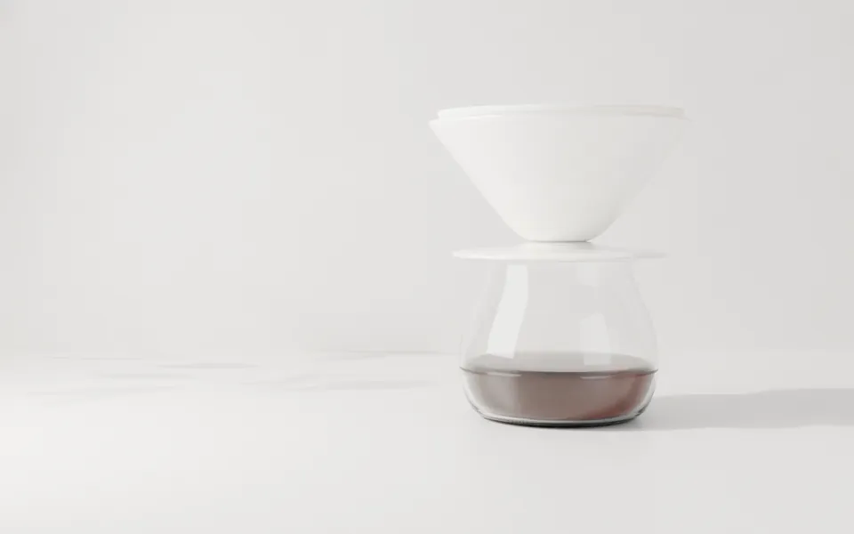
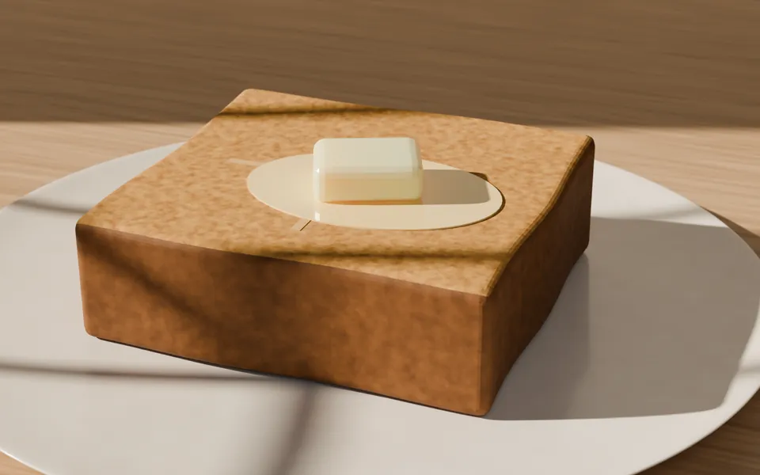
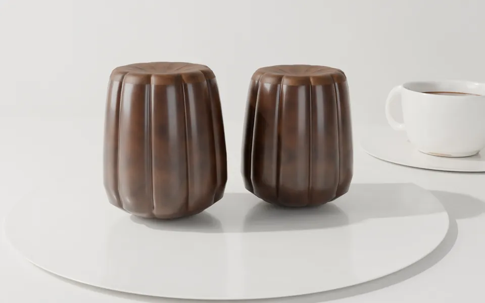

朝の刻の豆
エチオピア ゲデオ
浅煎り。柑橘、紅茶、はちみつ。
100g 1,300円
浅煎りと、焼きたてのトースト。
Three times a day
朝は目を覚ます浅煎り、昼は甘さの出る中煎り、夜は深く落ち着く深煎り。同じ豆を一日中出すより、その時間の体に合う一杯があると考えています。刻が替わると、豆も食べ物も替わります。
刻を押すと、その時間の店の色で見られます。

From the counter
朝は出勤前の十分間、昼は打ち合わせの合間、夜は一日の終わりに一人で。同じ人が同じ日に、違う顔をして入ってきます。
その人に毎回同じ一杯を出すのは、少しもったいないと思いました。朝の浅煎りは、夜に飲むと軽すぎる。夜の深煎りは、朝には重すぎる。だから三刻珈琲は、時計を見て豆を替えます。
店主・焙煎 朝倉 灯

Roasted in the shop
月曜と木曜の閉店後に、5kgの釜で焼きます。豆は焼いてから3日目から14日目までがいちばんおいしいので、それより古い豆は店では出しません。
| 焙煎日 | 豆 | 深さ |
|---|---|---|
| 11/06 | エチオピア ゲデオ | 浅煎り |
| 11/06 | インドネシア マンデリン | 深煎り |
| 11/03 | コロンビア ウィラ | 中煎り |
Beans to take home
朝の刻の豆
浅煎り。柑橘、紅茶、はちみつ。
100g 1,300円
昼の刻の豆
中煎り。黒糖、りんご。
100g 1,200円
夜の刻の豆
深煎り。ハーブ、ビターチョコ。
100g 1,250円
Something to eat

朝の刻
4cmに切った食パンを、炭火で表面だけ焼きます。バターとはちみつで。450円

昼の刻
外は焦がした砂糖で硬く、中はやわらかく。毎朝12個だけ焼きます。380円
After 17:00
17時から照明を半分にします。夜の刻はパソコンでの作業をご遠慮いただき、話すか、読むか、ぼんやりするための時間にしています。
夜のお品書き